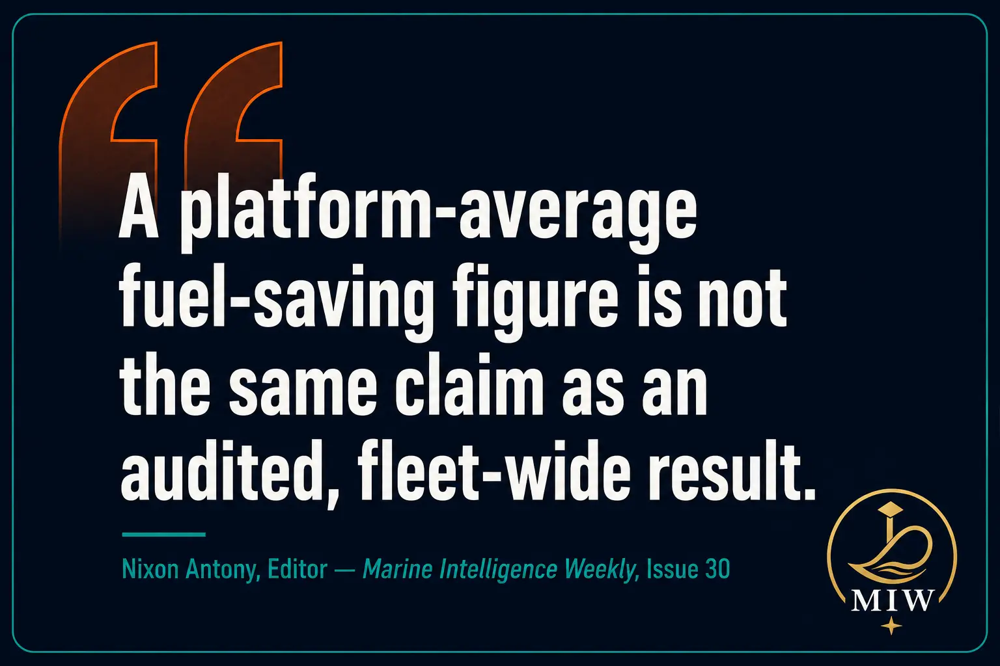
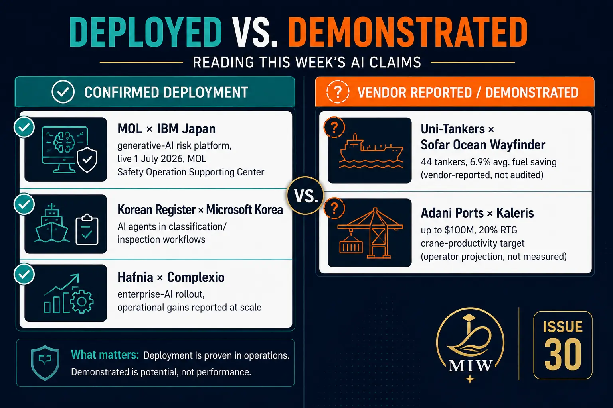
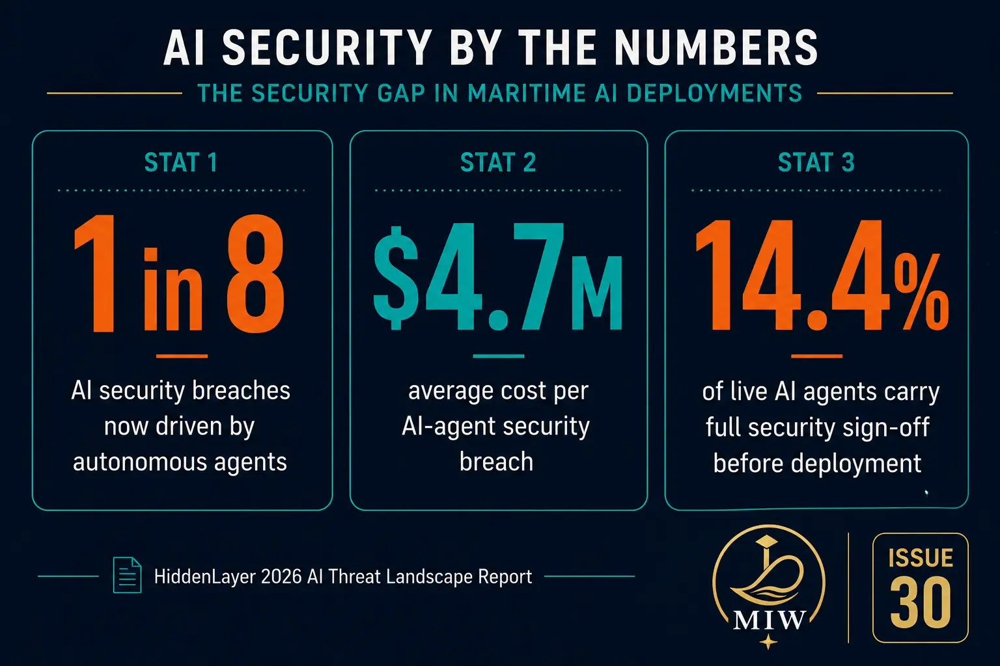
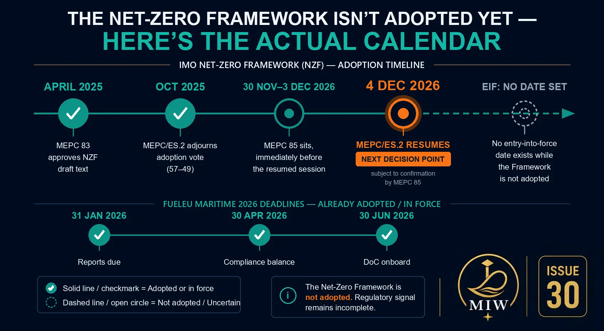

Quick Read
- Real AI deployment evidence is diverging fast from AI announcement volume: Uni-Tankers has committed all 44 tankers to voyage-optimisation software on a vendor-reported 6.9% saving, while HiddenLayer's 2026 data shows only 14.4% of live AI agents carry full security sign-off.
- MOL and IBM Japan went live 1 July 2026 with a generative-AI risk platform inside a real operations centre — one of this cycle's few examples of AI in a named, running system rather than a pilot or MoU.
- Korean Register and Microsoft Korea are embedding AI agents directly into classification and inspection workflows — the regulatory trust layer itself is going digital.
- The IMO Net-Zero Framework remains unadopted — MEPC's vote was delayed to October 2026 — a useful reminder that regulatory signal often lags both the AI hype cycle and the operational reality.
- India's DGMA hosted its National Maritime Security Coordinator at the Mercantile Marine Domain Awareness Centre (MMDAC) on 17 July 2026 — live, operational vessel-tracking and LRIT infrastructure, not a pitch, reviewed at the highest level days after the Hormuz circular.
Deployed vs. Demonstrated — Reading Maritime AI Claims Without the Hype
~880 words — Nixon's Voice
Every week now brings a fresh maritime AI announcement — a platform launch, a funding round, an MoU, a "pilot" that gets a press release. Most of it is noise dressed as signal. The job of this section, every issue, is to sort the two apart: what's actually running on a real vessel with a named operator behind it, versus what's still a slide deck. This week gives a cleaner-than-usual split.
What's deployed. CONFIRMED DEPLOYMENT MOL and IBM Japan went live on 1 July 2026 with a generative-AI risk-extraction platform inside MOL's Safety Operation Supporting Center — a named operator, a named system, a live date, fusing weather, sea state, position, and geopolitical data into real-time decision support for a 24/7 operations centre. CONFIRMED DEPLOYMENT Korean Register and Microsoft Korea are doing something structurally similar on the regulatory side: embedding AI agents across classification, inspection, and technical services, with a planned AI-centred ship data centre. If that holds, the trust layer every other maritime AI claim ultimately has to pass through — class approval — starts going digital itself. CONFIRMED DEPLOYMENT Hafnia's Complexio rollout is the third genuine data point: a large tanker owner reporting operational gains from an enterprise-AI deployment at scale, not a pilot.

What's still demonstrated, not deployed. VENDOR REPORTED Uni-Tankers has committed all 44 tankers to Sofar Ocean's Wayfinder voyage-optimisation platform, citing an average 6.9% fuel saving per voyage in 2025. That's a real commercial decision by a real operator — but the 6.9% figure is vendor-reported, not an independently audited before-and-after comparison across the fleet. A platform-average saving from early adopters doesn't automatically hold once it's applied across every trade pattern and level of crew adherence. Until Uni-Tankers or Sofar Ocean publishes its own before-and-after numbers, the honest read is "promising operator bet," not "proven CII dividend." VENDOR/OPERATOR REPORTED Adani Ports' up-to-$100 million Kaleris rollout sits in the same bucket — a 20% RTG crane-productivity target is a target, not a measured result, until named-terminal turnaround data comes out.

Confirmed deployment vs. vendor-reported claims — this week's split, sorted.
What the industry isn't talking about enough. INDEPENDENT STUDY HiddenLayer's 2026 AI Threat Landscape Report is the number that should be reshaping every deployment conversation above: autonomous agents now drive more than one in eight reported AI security breaches, at an average cost near $4.7 million per breach, and only 14.4% of AI agents currently live in production carry full security sign-off. MOL's risk platform, Wayfinder's routing agents, Korean Register's classification agents — every one of these is exactly the kind of system HiddenLayer is describing. IMO's digitalisation work has started pairing cybersecurity output with digital-shipping guidance, which is the right instinct — but no binding maritime instrument yet requires an AI agent to clear a security bar before it goes live.

Source: HiddenLayer 2026 AI Threat Landscape Report.
That's the piece this newsletter exists to keep in front of readers: not "AI is coming to shipping" — it's already here, in named systems, with named operators — but "which of these claims would survive an audit." A platform-average fuel-saving figure is not the same claim as an audited, fleet-wide result. A "live" AI agent is not the same claim as a security-signed-off one. None of this is cynicism about maritime AI — MOL/IBM and Korean Register are genuinely real, running systems. It's a discipline: read every claim for what kind of claim it actually is before deciding how much weight to put on it.
For engineers, the practical takeaway is narrower than "AI is changing shipping." If your vessel or fleet is adopting any AI-assisted decision-support, voyage-optimisation, or risk-extraction tool, the first question isn't "does it work" — early evidence on that is often genuinely good — it's "who signed off on its security posture, and can I see the audited numbers behind the headline saving." Engine-room and shipboard digital systems need strict change control, access management, patch discipline, and backup procedures before AI integration goes further than it already has. HiddenLayer's data says most of what's live right now hasn't cleared that bar.
REGULATORY PROPOSAL — NOT ADOPTED One footnote worth holding onto while reading AI deployment claims: the IMO Net-Zero Framework — the industry's single biggest pending regulatory event — is still not adopted. MEPC's extraordinary session adjourned the vote 57–49 in October 2025 and reconvenes in October 2026; the earliest realistic entry into force, if adopted then, is around March 2028. A regulatory framework needs to be checked against the actual MEPC calendar before it's treated as adopted, exactly as a vendor's saving claim needs auditing before it's treated as fact.
In maritime AI, the important question isn't whether a system is intelligent — it's whether its claims can withstand operational and regulatory scrutiny.
What Changed This Week
| What changed | Source | Confidence | Why it matters |
|---|---|---|---|
| IMO Net-Zero Framework — still not adopted. MEPC/ES.2 adjourned the vote (57–49) in October 2025; reconvenes October 2026. If adopted then, earliest EIF ~March 2028. | IMO (MEPC) | Regulatory proposal | Don't cite "adopted" or "March 2027" in orals or planning — track the actual October 2026 MEPC outcome directly. |
| FuelEU Maritime — 2026 compliance calendar now live. Ship reports due 31 Jan; compliance-balance approval by 30 Apr; DoC onboard by 30 Jun. GHG-intensity limit starts at 2% below 2020 baseline, ramping to 80% by 2050. | EU (Reg. 2023/1805) | Adopted regulation | Bunker Delivery Notes now need GHG intensity + LCV data; reconcile fuel records across EU MRV, IMO DCS, and FuelEU. |
| EU ETS — methane and N₂O in scope from 1 Jan 2026, alongside CO₂. Targeted revision proposed, ring-fencing more revenue for maritime decarbonisation. | European Commission | Adopted (scope) / Proposal (revision) | Methane slip on dual-fuel engines now carries a direct compliance cost; poor combustion raises N₂O, also now counted. |
| FuelEU/AFIR shore-power mandate — passenger/container ships must use onshore power at qualifying berths (>2 hrs) from 2030, wherever available from 1 Jan 2035. | EU (FuelEU + AFIR) | Adopted regulation | Long-lead item — shore-power procedures need to enter training well before 2030. |
| DNV Alternative Fuels Insight — 119 alt-fuel vessels ordered Jan–May 2026; LNG (~60) and LPG/ethane (~50) dominate; methanol/ammonia/hydrogen orders remain marginal. | DNV | Independent study | Near-term focus stays on gas-fuel systems, not exotic fuels. |
| DNV July 2026 Class Rules edition — new notations for shore-power readiness, battery integration, clarified fatigue-life (FL) assessment. | DNV | Adopted rule (class) | Update PMS now; mandatory for new contracts from 1 Jan 2027. |
| DNV-RP-0703 — competence benchmark for hydrogen-fuel crews, supplementing STCW/ISM. | DNV | Recommended practice | Map current training matrix against it before it's cited as best practice. |
| LR alarm-management research — 40M+ alarm events, 11 vessels; alarm fatigue undermines critical-alarm response. | Lloyd's Register | Independent study | Audit your own ECR alarm log for chronic nuisance sources. |
| ABS rolling Marine Vessel Rules updates — alt-fuel systems, bilge/slop-tank arrangements, automation cybersecurity. | ABS | Adopted rule (class) | Verify OWS/15ppm alarm testing against current approved drawings. |
| DGMA Circular No. 36 of 2026 — suspends deployment of Indian seafarers on vessels transiting the Strait of Hormuz; mandates strict ISPS/SSP compliance. | DGMA / DG Shipping, India | Confirmed / in force | See India Angle. Applies wherever Indian ratings are aboard, regardless of flag. |

The Net-Zero Framework's actual calendar vs. FuelEU's already-adopted 2026 deadlines.
Regulatory Groundwork Around the Deployments
IMO's Facilitation Committee has advanced a work plan toward an IMO Strategy on Maritime Digitalization, targeting adoption by end-2027, explicitly naming AI and autonomous navigation as transformative while flagging cybersecurity and the digital divide as the associated risks. IMO's digitalisation work now also includes cybersecurity output for Maritime Single Window systems and electronic-certificate guidance — a sign that digital shipping and formal cyber safeguards are being built together rather than sequentially, even if binding AI-agent-specific rules aren't there yet.
Engineer's checklist: for any AI-assisted decision-support, voyage-optimisation, or risk-extraction tool on your vessel or fleet — ask who owns security sign-off, and ask to see audited performance numbers rather than platform-average headline figures.
Terminal AI, Classing, and the Flag State's Own Infrastructure
Adani Ports (APSEZ) has committed up to $100 million to scale Kaleris' AI-augmented terminal platform across 15 container terminals at nine ports, targeting a 20% RTG crane-productivity gain and roughly 91 million tonnes of added capacity by 2030. Read against this issue's own standard: that's a commercial commitment and a stated target, not yet a published result. What's actually confirmed working today is the contract and the rollout scope — the productivity and capacity numbers are Adani's own projections.
On classification: Indian Register of Shipping (IRS) took Lila Jamnagar — a 298,997 DWT VLCC and one of the largest vessels ever under Indian flag — into class in March 2026, alongside continued growth in naval newbuild classing under the Atmanirbhar Bharat programme. This is a confirmed, completed classing action — the strongest "deployed" claim in this section.
On the security side: on 17 July 2026, DGMA hosted National Maritime Security Coordinator Vice Admiral Biswajit Dasgupta and Rear Admiral Rahul Shankar at its Mercantile Marine Domain Awareness Centre (MMDAC) in Mumbai — live, operational infrastructure (DG Communication Centre, LRIT system), not a pitch, reviewed at the highest level days after the Hormuz circular. Separately, following attacks on merchant vessels in the strait this month, DGMA issued Circular No. 36 of 2026, suspending deployment of Indian seafarers on vessels transiting the strait and directing strict ISPS/SSP compliance. For MEO Class 1 candidates: the relevant takeaway is the mechanism, not the incident — a flag-state circular can suspend crew deployment and tighten voyage-risk-assessment requirements in response to a live security situation, sitting squarely inside ISPS Code and SSP doctrine.
Read the Claim, Not the Headline

The line I keep drawing this issue is the one this whole publication is built on: deployed versus demonstrated, audited versus vendor-reported, adopted versus expected-to-be-adopted. MOL's risk platform is deployed. Uni-Tankers' 6.9% is demonstrated but not yet audited. The Net-Zero Framework is expected, not adopted. None of those distinctions make the underlying story less real — AI is genuinely running on real ships now, and the Net-Zero Framework is genuinely coming. But the distinction is the whole value of reading a publication like this one instead of a press release: knowing which claim you're actually looking at before you plan a training matrix, a PMS update, or an oral-exam answer around it.
This Week, At a Glance
| Topic | Key Point | Action for Engineers |
|---|---|---|
| AI deployment evidence | MOL/IBM, Korean Register/Microsoft, Hafnia genuinely deployed; Uni-Tankers/Sofar Ocean and Adani/Kaleris figures vendor/operator-reported, not yet audited | Ask for audited, named-fleet numbers before treating any AI-tool saving claim as proven |
| AI agent security gap | Only 14.4% of live AI agents have full security sign-off; agents drive 1 in 8 AI breaches | Ask who owns security sign-off for any AI tool your vessel/fleet is adopting |
| IMO Net-Zero Framework | Not adopted — MEPC reconvenes October 2026; earliest EIF ~March 2028 if adopted | Don't cite "adopted" or "March 2027" in orals or planning |
| FuelEU Maritime 2026 deadlines | Reports (31 Jan), compliance-balance approval (30 Apr), DoC onboard (30 Jun) all due for 2025 reporting year | Confirm your vessel's FuelEU DoC is onboard; reconcile fuel records across EU MRV/IMO DCS/FuelEU |
| Alarm fatigue (LR research) | 40M+ alarms analysed; nuisance alarms measurably degrade critical-alarm response | Audit your own ECR alarm log for chronic nuisance sources |
| Strait of Hormuz — DGMA Circular 36/2026 | Deployment of Indian seafarers suspended; ISPS/voyage-risk-assessment mechanism | Verify current DGMA advisory status before any Hormuz/Gulf transit |